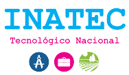

🎓
Centro Tecnológico
William Schwartz Cunningham
🚀 Descubre la carrera que va contigo
Responde preguntas, supera pequeños retos y descubre las tres carreras que más se relacionan con tus intereses y habilidades.
🎯
Descubre tus intereses
🧠
Resuelve retos rápidos
🏆
Conoce tu Top 3
No hay respuestas correctas o incorrectas. Queremos conocer lo que más disfrutas.